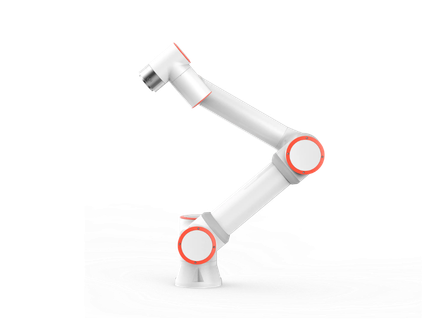

"Posso sostituire il cobot in linea con un G1?" Quasi sempre la risposta è no. L'umanoide funziona, ma risolve un problema diverso. Questa guida mette a confronto le due famiglie con le specifiche dichiarate dai produttori, i prezzi del listino pubblico e lo stato delle norme di sicurezza, per decidere da dove partire.
Cosa intendiamo per robotica tradizionale
- Cobot: bracci collaborativi per avvitatura, pick and place, asservimento macchine, palletizzazione. Esempio: il Fairino FR3, 6 assi, carico nominale 3 kg, sbraccio 622 mm, ripetibilità ±0,02 mm secondo ISO 9283 (scheda del produttore). Gamma completa nella pagina cobot.
- AMR: robot mobili autonomi per trasporto di carrelli, scaffali e pallet su percorsi interni. Si parte, a listino, dall'AutoXing Juno Plus. Panoramica nella pagina AMR.
- Quadrupedi: ispezione, sorveglianza, trasporto di sensori in ambienti non strutturati, con modelli come Go2, AS2 e B2.
Hanno in comune cicli definiti, norme di riferimento consolidate e KPI facili da misurare: pezzi all'ora, OEE, tempo ciclo.

Cosa porta oggi un umanoide (e cosa no)
Un bipede come il G1 o l'H2 si muove in spazi progettati per persone, può cambiare task nella stessa giornata ed è la piattaforma su cui oggi si fa ricerca su AI embodied, teleoperazione e apprendimento per imitazione. Le specifiche ufficiali del G1 aiutano a capire i limiti:
| Specifica (unitree.com) | G1 | G1 EDU |
|---|---|---|
| Altezza in piedi | 1320 mm | 1320 mm |
| Peso con batteria | circa 35 kg | circa 35 kg e oltre |
| Gradi di libertà | 23 | da 23 a 43 |
| Carico massimo braccio | circa 2 kg | circa 3 kg |
| Batteria | 9000 mAh, circa 2 h | 9000 mAh, circa 2 h |
| Coppia massima ginocchio | 90 N·m | 120 N·m |
Unitree precisa che il carico del braccio varia molto con la postura di estensione e non dichiara un valore di ripetibilità. Usi realistici oggi:
- laboratori universitari e progetti di ricerca;
- PoC in area delimitata: kitting leggero, raccolta dati, teleoperazione;
- dimostratori tecnologici e formazione interna.
Più raramente ha senso sostituire con un umanoide una cella già efficiente.
Confronto diretto (valori indicativi)
| Cobot / AMR | Umanoide bipede | |
|---|---|---|
| Precisione | FR3: ±0,02 mm dichiarati (ISO 9283) | G1: non dichiarata dal produttore |
| Carico | FR3: 3 kg nominali; AMR: da decine a centinaia di kg secondo il modello | G1: circa 2 kg, EDU circa 3 kg per braccio |
| Autonomia | Cobot alimentato da rete; AMR secondo il modello, con ricarica in stazione | G1: circa 2 h per batteria |
| Norme di riferimento | ISO 10218-1/2:2025, applicazioni collaborative incluse | Norma specifica in sviluppo (ISO 25785-1) |
| Prezzo a listino (IVA esclusa) | FR3 da 5.766 €; AMR da 20.399 € | G1 Air da 23.997 €; G1 EDU (U1) da 37.563 €; H2 Air da 45.000 € |
| KPI tipico | Tempo ciclo, OEE, pezzi all'ora | Success rate del task, dati raccolti, flessibilità |
Prezzi aggiornati sul listino Unitree e nelle pagine prodotto. Al prezzo dell'umanoide vanno aggiunti sviluppo software, area di prova attrezzata e formazione: spesso pesano quanto l'hardware.
Sicurezza e norme
Informazioni generali, non consulenza legale.
Le ISO 10218-1:2025 e ISO 10218-2:2025, pubblicate a febbraio 2025, sostituiscono le edizioni 2011 e coprono robot industriali, applicazioni e celle. La parte 1 ora incorpora i requisiti per le applicazioni collaborative che prima erano nella specifica tecnica ISO/TS 15066.
Un bipede pone un problema in più: resta in piedi solo grazie al controllo attivo dell'equilibrio. Se perde alimentazione o va in arresto può cadere, mentre un AMR o un cobot si fermano dove sono. Per questa categoria (robot mobili industriali a stabilità controllata attivamente, bipedi e quadrupedi) l'ISO sta lavorando alla ISO 25785-1, non ancora pubblicata.
Dal 20 gennaio 2027 si applica il Regolamento (UE) 2023/1230, che sostituisce la direttiva macchine 2006/42/CE. Cosa significa per i robot Unitree: Regolamento macchine 2027. In pratica i primi test con un umanoide si fanno in un'area delimitata, con sistema anticaduta (imbracatura o carroponte) e operatori formati sulle procedure di arresto.
Quando restare sul tradizionale
- Task ad alto volume e ciclo breve.
- Serve una macchina con marcatura CE e messa in servizio rapida.
- L'ambiente è già strutturato: nastri, baie, percorsi definiti.
- L'investimento deve ripagarsi con un risparmio misurabile in tempi brevi.
Quando valutare un umanoide
- Task ancora non formalizzati, o molti task diversi a basso volume.
- Progetto di R&S, università, bando di ricerca.
- Ambiente pensato per persone, difficile da adattare con nastri o AMR.
- Budget dedicato all'innovazione e alla raccolta dati, non alla sostituzione diretta di manodopera.
C'è anche una via di mezzo: il G1-D è un torso dual-arm senza gambe, su piantana fissa (G1-D Standard, da 39.170 €) o su base mobile (G1-D Flagship, da 59.080 €). Toglie il rischio di caduta e resta vicino a una cella di manipolazione. Per scegliere tra i modelli: quale umanoide Unitree scegliere.
Il percorso che consigliamo di solito
- Prima: automatizza il collo di bottiglia con cobot o AMR, dove il ritorno è più facile da misurare.
- Poi: PoC umanoide su un task complementare (ispezione, rifornimento, raccolta dati), con KPI scritti prima di iniziare.
- Scale-up: solo se i KPI del PoC reggono (success rate, tempo ciclo, costo totale).
Per l'acquisto da parte di un'impresa, sia cobot sia umanoidi possono rientrare nell'iperammortamento 2026 se rispettano i requisiti, a partire dall'interconnessione: i dettagli in come finanziare un robot nel 2026. Se non sai da che parte partire, l'assessment gratuito serve a questo: Abra Robotics fa parte della filiera Unitree Italia ma vende anche cobot e AMR, quindi non c'è motivo di proporti un umanoide dove non serve.
Domande frequenti
Posso sostituire un cobot in linea con un umanoide G1?
Quasi mai conviene. Un cobot come il Fairino FR3 dichiara una ripetibilità di ±0,02 mm e lavora alimentato da rete; il G1 ha un'autonomia dichiarata di circa 2 ore e un carico per braccio di circa 2-3 kg, mentre Unitree non dichiara un valore di ripetibilità. L'umanoide ha senso su task diversi, non come sostituto di una cella già efficiente.
Quanto costa un umanoide rispetto a un cobot?
A listino Abra Robotics, IVA esclusa: cobot Fairino FR3 da 5.766 €, AMR AutoXing Juno Plus da 20.399 €, Unitree G1 Air da 23.997 €, G1 EDU (U1) da 37.563 €, H2 Air da 45.000 €. Al prezzo dell'umanoide vanno aggiunti sviluppo software, area di prova e formazione.
Esiste una norma di sicurezza specifica per gli umanoidi?
Non ancora pubblicata. Le ISO 10218-1 e 10218-2 del 2025 coprono robot industriali e celle, comprese le applicazioni collaborative. Per i robot mobili che restano in equilibrio con un controllo attivo, come bipedi e quadrupedi, l'ISO sta sviluppando la ISO 25785-1. Dal 20 gennaio 2027 si applica il Regolamento macchine UE 2023/1230.
Quando ha senso un umanoide in azienda?
Quando il valore è nella flessibilità o nella ricerca: task ancora non formalizzati, raccolta dati per addestrare modelli, ambienti pensati per persone difficili da adattare, progetti di R&S con budget dedicato. Se il task è ripetitivo e ad alto volume, un cobot o un AMR resta la scelta più prevedibile.
Esiste una via di mezzo tra cobot e umanoide?
Sì: il G1-D è un torso dual-arm Unitree senza gambe, su piantana fissa (Standard, da 39.170 €) o su base mobile (Flagship, da 59.080 €). Elimina il rischio di caduta del bipede e resta più vicino a una cella di manipolazione.
Fonti
- Unitree, scheda ufficiale G1 (specifiche G1 e G1 EDU)
- FAIRINO, scheda FR3 (carico, sbraccio, ripetibilità ISO 9283)
- ISO, ISO 10218-1:2025, Robotics - Safety requirements - Part 1: Industrial robots
- ISO, ISO 10218-2:2025, Part 2: Industrial robot applications and robot cells
- ISO, ISO 25785-1 (progetto in sviluppo)
- EUR-Lex, Regolamento (UE) 2023/1230 relativo alle macchine
- EUR-Lex, Sintesi del Regolamento macchine (data di applicazione 20 gennaio 2027)